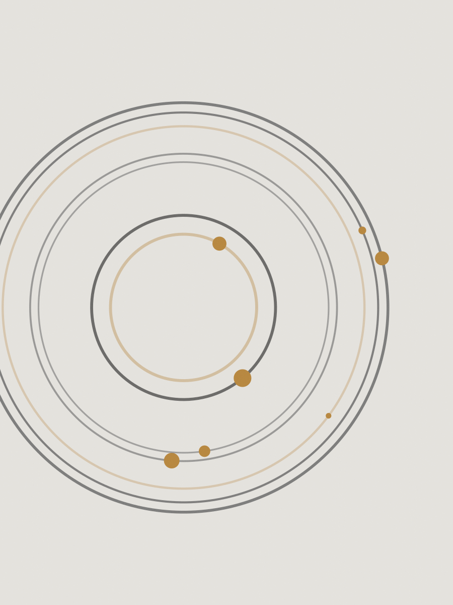

Cinza Chumbo
Dezoito retratos feitos em três tardes de chuva, com uma única janela de 1,20 m como fonte. A modelo é a ceramista Lia Bittar, que posou sentada porque a luz caía baixa.
- Ano
- 2023
- Fotos
- 18, tiragem de 15
- Câmera
- Pentax 67 · 105 mm f/2.4
- Filme
- Kodak Portra 400, 120
- Papel
- Hahnemühle Photo Rag 310 g
- Formato
- 30 × 40 cm, margem branca de 4 cm